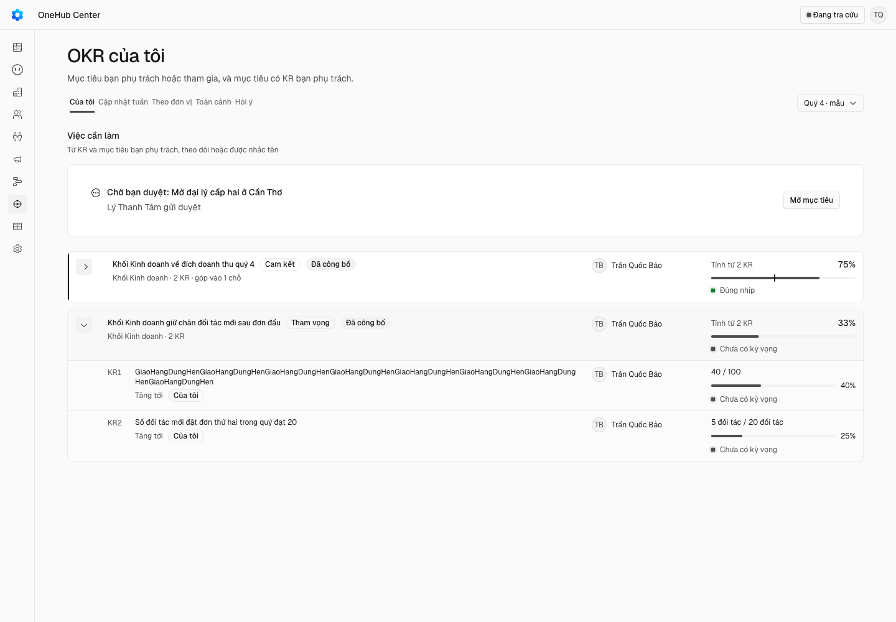

Mục tiêu và KR trong cùng một khung — danh sách, sheet chi tiết và Chấm điểm
Các eval
| Eval | Tiêu chí | Loại | Verdict | run_id | verified_at |
|---|---|---|---|---|---|
| E1 | AC-1 | ui-check | PASS | muc-tieu-va-kr-E1-20261003T082959Z | 2026-10-03T08:29:59Z |
| E2 | AC-1 | test | PASS | muc-tieu-va-kr-E2-20261003T081803Z | 2026-10-03T08:18:03Z |
| E3 | AC-2 | test | PASS | muc-tieu-va-kr-E3-20261003T081805Z | 2026-10-03T08:18:05Z |
| E4 | AC-3 | test | PASS | muc-tieu-va-kr-E4-20261003T081806Z | 2026-10-03T08:18:06Z |
| E5 | AC-3 | ui-check | PASS | muc-tieu-va-kr-E5-20261003T082959Z | 2026-10-03T08:29:59Z |
| E6 | AC-4 | test | PASS | muc-tieu-va-kr-E6-20261003T081813Z | 2026-10-03T08:18:13Z |
| E7 | AC-5 | test | PASS | muc-tieu-va-kr-E7-20261003T081814Z | 2026-10-03T08:18:14Z |
| E8 | AC-6 | test | PASS | muc-tieu-va-kr-E8-20261003T081815Z | 2026-10-03T08:18:15Z |
| E9 | AC-7 | test | PASS | muc-tieu-va-kr-E9-20261003T081816Z | 2026-10-03T08:18:16Z |
| E10 | AC-8 | test | PASS | muc-tieu-va-kr-E10-20261003T081825Z | 2026-10-03T08:18:25Z |
| E11 | AC-8 | script | PASS | muc-tieu-va-kr-E11-20261003T081825Z | 2026-10-03T08:18:25Z |
| E12 | AC-9 | test | PASS | muc-tieu-va-kr-E12-20261003T081825Z | 2026-10-03T08:18:25Z |
| E13 | AC-10 | ui-check | PASS | muc-tieu-va-kr-E13-20261003T082959Z | 2026-10-03T08:29:59Z |
| E14 | AC-11 | script | PASS | muc-tieu-va-kr-E14-20261003T083116Z | 2026-10-03T08:31:16Z |
| E15 | AC-12 | judgment | PASS | — | — |
| E16 | AC-12 | ui-check | PASS | muc-tieu-va-kr-E16-20261003T082959Z | 2026-10-03T08:29:59Z |
| E17 | AC-13 | test | PASS | muc-tieu-va-kr-E17-20261003T081834Z | 2026-10-03T08:18:34Z |
| E18 | AC-8 | script | PASS | design-gate-23fb210b4e | 2026-10-03T08:18:36Z |
Chi tiết từng eval
PASS E1 · ui-check
AC-1: Given người dùng phụ trách một mục tiêu đã công bố có ≥ 2 KR trong chu kỳ hiện tại,
GHI TIEN DE okr.mine tran-quoc-bao: 2 muc tieu (mau-okr-mt-q4-kd:cong-bo:2KR, cmus4t4o4000041tyaqxpc2pq:cong-bo:2KR) DUNG E1 1440 sang: vung danh sach co 0 [data-slot=card-header] (can 0) DUNG E1 1440 sang mau-okr-mt-q4-kd: mot table chua hang muc tieu va 2/2 hang KR DUNG E1 1440 sang mau-okr-mt-q4-kd: chu 75% == progress 75 cua API DUNG E1 1440 sang mau-okr-mt-q4-kd: vach [data-expected]=44 == expected 44 (lam tron 44) DUNG E1 1440 sang cmus4t4o4000041tyaqxpc2pq: vach [data-expected]=null == expected 0 (vang) GHI E1 1440 toi: ma tran 2 muc tieu (nguon) · 2 khoi tren trang · 4 KR da so KET LUAN: 86 DUNG, 0 SAI — ma thoat 0
PASS E2 · test
AC-1: Given người dùng phụ trách một mục tiêu đã công bố có ≥ 2 KR trong chu kỳ hiện tại,
so ca co-du-lieu progress-api: 1 so ca co-du-lieu: 2 so ca co-du-lieu ky-vong: 3 3 pass 0 fail Ran 3 tests across 1 file.
PASS E3 · test
AC-2: Given một đơn vị có ≥ 3 mục tiêu, When mở «Theo đơn vị», Then mỗi mục tiêu là một
so ca theo-don-vi: 3 1 pass 0 fail Ran 1 test across 1 file.
PASS E4 · test
AC-3: Given danh sách đang mở mọi mục tiêu, When người bấm nút mũi tên (hoặc nhấn Enter/Space
so ca thu-mo: 6 so ca thu-mo mo-lai: 2 so ca thu-mo id-la: 2 so ca thu-mo trung-rong: 2 so ca thu-mo bam-ten: 1 6 pass 0 fail
PASS E5 · ui-check
AC-3: Given danh sách đang mở mọi mục tiêu, When người bấm nút mũi tên (hoặc nhấn Enter/Space


DUNG E5 1440 mau-okr-mt-q4-kd: sau bam con 0 hang [data-kr] (can 0) DUNG E5 1440 mau-okr-mt-q4-kd: aria-expanded=false (can false) GHI E5 1440: location.search sau bam «?thuMucTieu=mau-okr-mt-q4-kd» DUNG E5 1440 mau-okr-mt-q4-kd: sau tai lai con 0 hang [data-kr] DUNG E5 1440 mau-okr-mt-q4-kd: mo lai (true) → location.search «» khong con thuMucTieu GHI E5 no-preference: icon transition-duration 0.24s · property transform DUNG E5 prefers-reduced-motion reduce: icon transition-duration 0s (can 0s) · property none KET LUAN: 86 DUNG, 0 SAI — ma thoat 0
PASS E6 · test
AC-4: Given các KR kiểu tăng tới, giảm xuống có khởi điểm ≠ 0, mốc, và KR nguồn máy, When
so khang dinh o-tien-do: 7 so ca o-tien-do thead: 1 so ca o-tien-do so-kr: 1 so ca o-tien-do ban gon may: 2 4 pass 0 fail
PASS E7 · test
AC-5: Given một mục tiêu chưa có KR, When danh sách vẽ, Then dưới hàng mục tiêu có một hàng
so ca chua-co-kr: 2 1 pass 0 fail Ran 1 test across 1 file.
PASS E8 · test
AC-6: Given một mục tiêu có `whyNow`, góp vào một mục tiêu khác qua một KR, và có ≥ 2 KR, When
so ca sheet-chi-tiet a: 1/4 so ca sheet-chi-tiet b: 1/4 so ca sheet-chi-tiet c: 1/4 so ca sheet-chi-tiet chi-doc: 1/4 4 pass 0 fail
PASS E9 · test
AC-7: Given một chu kỳ ở pha chấm điểm, When mở «Chấm điểm», Then mỗi mục tiêu là hàng đầu
so ca cham-diem: 2 so ca cham-diem doi-chung: 1 so ca cham-diem luu: 2 3 pass 0 fail
PASS E10 · test
AC-8: Given `SimpleTable`/`SimpleTableRow` của `packages/ui`, When một hàng mang `nested`
so ca hang: 4 10 pass 0 fail Ran 10 tests across 3 files.
PASS E11 · script
AC-8: Given `SimpleTable`/`SimpleTableRow` của `packages/ui`, When một hàng mang `nested`
ma tran dieu kien: bat — dung ma tran bien the ngoac vuong: bat — dung ma tran bien the data-[]: bat — dung ma tran vien tran: bat — dung ma tran lop sach: khong bat — dung tep da quet: 61, SimpleTableRow da quet: 17
PASS E12 · test
AC-9: Given `BangMucTieu` và bảng KR của sheet, When không truyền điểm cắm nào, Then không có
so ca diem-cam a: 2 bien x (tr + khoi + 5 KR) = 14 so ca diem-cam b: 12 so ca diem-cam dang-mo: 1 so ca diem-cam sheet: 6 4 pass 0 fail
PASS E13 · ui-check
AC-10: Given khung 375 px và dữ liệu có ≥ 2 mục tiêu, mỗi mục tiêu ≥ 2 KR, cùng một chu kỳ
DUNG E13 375 cua-toi sang: scrollWidth 375 == innerWidth 375 DUNG E13 375 cua-toi sang: 4/4 hang KR co tien do/diem hien cung td voi ten GHI E13 375 theo-don-vi sang: 12 hang muc tieu · 25 hang KR (toi thieu 2 · 4) DUNG E13 375 sheet toi: scrollWidth 375 == innerWidth 375 GHI E13 375 cham sang: 4 hang muc tieu · 9 hang KR (toi thieu 2 · 4) DUNG E13 375 cham toi: 9/9 hang KR co tien do/diem hien cung td voi ten KET LUAN: 86 DUNG, 0 SAI — ma thoat 0
PASS E14 · script
AC-11: Given danh sách viết sẵn ở mục «Móc DOM phải giữ» của design doc — 41 eval máy
bo ra: khung-tao-okr-nhu-deal/E18 — thuoc chay thuoc: rang/thuoc-cu.mjs tu chay eval cua ba ho so khac bo ra: okr-soat-anh-luot-3/E12 — luat pham vi vong: rang/san-thiet-ke.mjs do diff merge-base cua vong do bo ra: okr-soat-anh-luot-3/E13 — luat pham vi vong: rang/soi-ma.mjs do dong moi trong diff merge-base cua vong do merge-base 9660bf6c · dinh 03861afa6417 · danh sach 41 eval = se chay 41 (qua 22 lenh rieng) + khong chay duoc 0 · bo ra 3 da chay 41/41 eval do san o B (14): toan-canh-okr E2 E3 E14 E23 · hop-thoai-giu-cho-dang-nhap E9 · dat-okr-trong-crm E11 E12 E13 E20 · so-okr-tu-chay E11 E12 E13 · cap-nhat-tuan-okr E18 E29 tong 41 eval: xanh o HEAD 27 · chap chon 0 · do san o B 14 · hoi quy 0 khong eval nao do o HEAD ma xanh o 9660bf6c
PASS E15 · judgment
AC-12: Given ảnh «Của tôi», «Theo đơn vị» và sheet chi tiết ở 1440 px cả hai theme, When một
Phán đoán: Cả ba giám khảo PASS. Ở cả ảnh sáng lẫn tối, mỗi mục tiêu là hàng đầu của một khung riêng mang % (75/33 ở Của tôi; 75/24/48 ở Theo đơn vị; 35 ở sheet) kèm «Tính từ N KR», các KR1…KRn nằm gọn trong khung, giữa các khung có khoảng trống nên không KR nào lửng giữa hai mục tiêu; số KR khớp «3 mục tiêu · 5 KR»; so với E16-hien-tai (tiêu đề ngoài khung, không có %) liên kết rõ hơn hẳn. Ghi chú không đổi phán quyết: ở theme tối nền hàng mục tiêu gần nền hàng KR, nhóm tách nhờ khung và khoảng cách; chữ «qua KR «…»» ở khu Góp vào có thể khiến người mới đọc hai lần.
PASS E16 · ui-check
AC-12: Given ảnh «Của tôi», «Theo đơn vị» và sheet chi tiết ở 1440 px cả hai theme, When một
DUNG E16 theo-don-vi sang: don vi co 3 muc tieu (>= 3) DUNG E16 theo-don-vi: sha256 sang 9cc017e809c24d18… != toi 5450a65c46cb263c… DUNG E16 sheet mau-okr-mt-q4-kd-bac-1 sang: [data-khu=vi-sao] hien trong anh DUNG E16 sheet mau-okr-mt-q4-kd-bac-1 toi: [data-khu=gop-vao] hien trong anh DUNG E16 sheet: sha256 sang 95fe221cc6f9cf84… != toi 47816caa5da3842f… DUNG E16 hien-tai: _acceptance/muc-tieu-va-kr/evidence/E16-hien-tai.png 114 KB > 10 KB KET LUAN: 86 DUNG, 0 SAI — ma thoat 0
PASS E17 · test
AC-13: Given «Của tôi» và «Theo đơn vị», When dữ liệu đang tải, tải lỗi hoặc rỗng, Then trạng
trang-thai: 16 id tu docs/superpowers/specs/2026-10-02-muc-tieu-va-kr-design.md giao E13: ST-mtkr-hep trang-thai da so: ST-cuatoi-rong trang-thai da so: ST-donvi-dangtai trang-thai da so: ST-donvi-loi trang-thai da so: ST-donvi-chuakychay 17 pass 0 fail
PASS E18 · script
AC-8: Given `SimpleTable`/`SimpleTableRow` của `packages/ui`, When một hàng mang `nested`
simple-table.tsx verdict PASS p0_count 0 (run design-gate-23fb210b4e) bang-muc-tieu.tsx verdict PASS p0_count 0 khoi-muc-tieu.tsx verdict PASS p0_count 0 bang-kr.tsx verdict PASS p0_count 0 tien-do-kr.tsx verdict PASS p0_count 0 cham-diem.tsx verdict PASS p0_count 0 objective-sheet.tsx verdict PASS p0_count 0
Eval không phân biệt (Analyst)
Vòng verify
- Round 1–4: trước khi thu hẹp AC-11; E14 chiếm ~9,6 giờ máy và không ra hồi quy sản phẩm nào.
- Round 5 (sau Cổng Phạm vi duyệt lại 03/10): BLOCKED/REJECT vì ca api nguon-khoa cũ.
- Round 6: REJECT vì ux-lai-thu-8c-okr/E15 đỏ dưới tải.
- Round 7–9: BLOCKED vì agent chết. Nhánh đã gộp onehub 9660bf6c có bản vá nguon-khoa.
- Round 10: mọi eval máy và ui-check xanh, bảy suite xanh lần đầu, E14 hoi quy 0 (14 eval đỏ sẵn ở merge-base đúng danh sách Known limits của hợp đồng); E15 chưa chấm → PENDING-JUDGMENT.